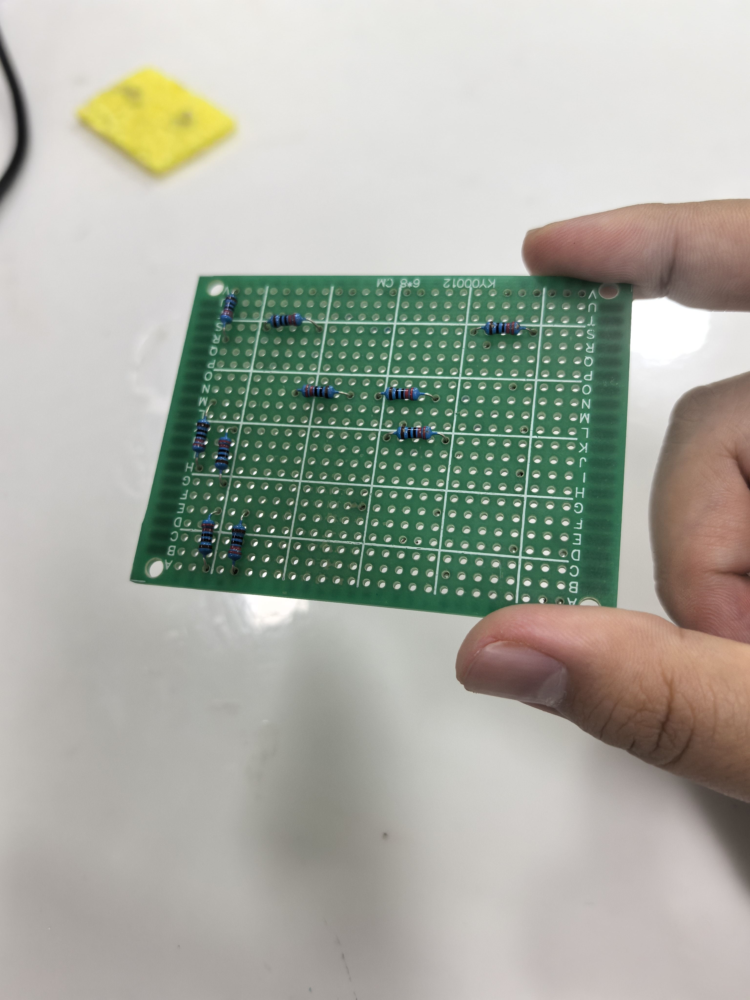
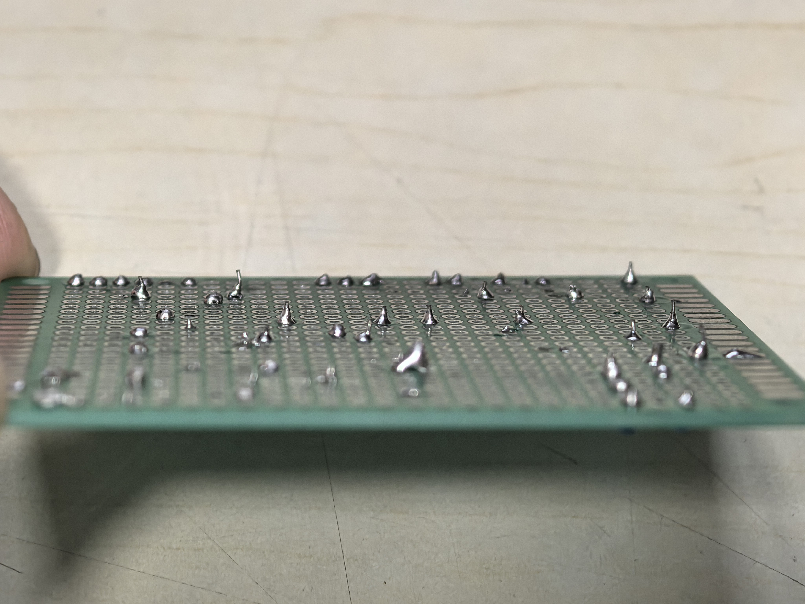
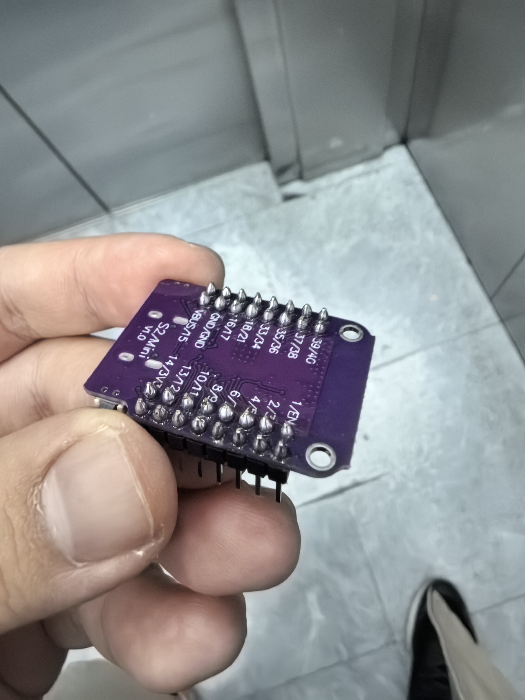
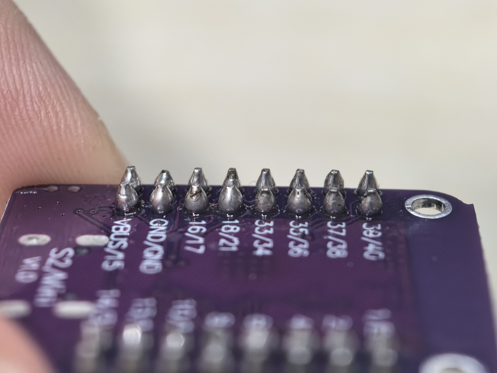

一、课堂总结报告
1. 焊接过程简要说明
本次电子焊接学习以基础通孔焊接为核心，完成了简易LED电路的焊接实操。从工具准备、材料检查开始，遵循焊接五步法完成元器件焊接，最后对焊点进行质量检测与修正，全程注重操作规范和安全防护。
2. 焊接前的工具和材料准备
- 工具：电烙铁（调温款）、烙铁架、吸锡器、镊子、尖嘴钳、松香、海绵（用于清洁烙铁头）
- 材料：PCB电路板、LED灯珠、电阻（220Ω）、杜邦线、焊锡丝（含松香芯）、电池座、5号电池
- 防护：隔热手套、护目镜、防静电手环
3. 焊接五步法具体步骤
- 准备：清洁烙铁头，将电烙铁升温至350-380℃，将元器件引脚插入PCB对应孔位，用镊子固定位置
- 加热：将烙铁头同时接触元器件引脚和PCB焊盘，加热约2-3秒（确保焊盘和引脚充分受热）
- 送锡：待焊盘升温后，将焊锡丝接触烙铁头与焊盘的结合处，让焊锡均匀覆盖焊盘和引脚（焊锡量以包裹引脚且不形成尖刺为宜）
- 撤锡：待焊锡充分润湿焊盘后，先移开焊锡丝
- 撤烙铁：继续加热0.5秒后，沿引脚方向缓慢移开烙铁头，保持元器件不动直至焊锡冷却凝固
4. 遇到的具体困难及解决方法
- 困难1：烙铁头温度过高，导致焊锡融化过快，出现“虚焊”（焊点不牢固）
解决方法：将烙铁温度降至360℃，缩短加热时间，焊接前在烙铁头沾少量松香，提升焊锡流动性 - 困难2：焊锡量过多，形成“包焊”（焊点过大，易短路）
解决方法：使用吸锡器吸除多余焊锡，练习“少量多次”送锡，借助镊子辅助控制焊锡范围 - 困难3：LED灯珠正负极接反，焊接后无法点亮
解决方法：焊接前标记LED长脚（正极）对应PCB丝印方向，焊接后用万用表检测通断，拆焊后重新焊接
5. 焊点质量评价
整体焊点合格率约85%：
✅ 合格焊点：焊锡呈亮银色，均匀包裹引脚，与焊盘结合紧密，无气泡、无尖刺，引脚与焊盘无脱离；
❌ 不合格焊点：约15%的焊点存在轻微虚焊（焊点表面发暗）、少量焊锡堆积，已通过补焊、吸锡重新修正；
改进方向：提升烙铁加热时间的把控精度，减少手抖导致的焊锡偏移，加强焊接后的目视检测。
二、焊接成果展示




三、AI创意项目（待补充）
1. 创意方案
（预留框架：请在此处填写基于AI助教设计的“电子连接”相关创意项目，例如：
▶ 简易智能家居小夜灯：通过焊接光敏电阻、三极管、LED和电池，实现“环境光暗自动点亮”的小夜灯；
▶ 用比喻解释焊接：“电子焊接就像给元器件‘搭鹊桥’，焊锡是‘鹊桥的桥身’，烙铁的热量是‘搭建鹊桥的力量’，让元器件引脚和电路板‘相遇并牢牢结合’，实现电流的‘鹊桥相会’”。）
2. 与AI助教的对话记录
我：（请补充你的提问，例如：“帮我设计一个适合新手的电子焊接创意项目，结合智能家居场景”）
AI助教：（请补充AI的回复内容）
我：（请补充后续追问/调整需求的内容）
AI助教：（请补充AI的进一步解答）